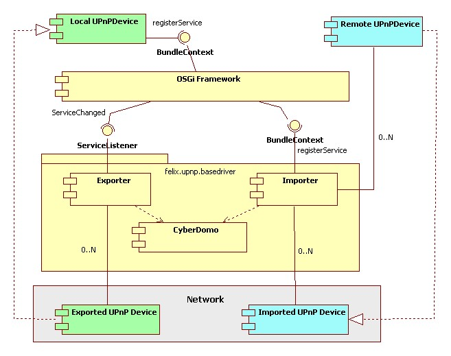
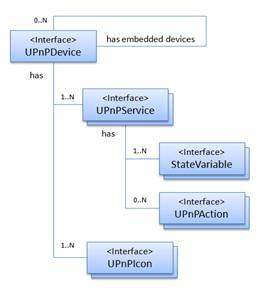

Overview of the Base Driver Architecture
The Figure 4 shows a simplified component view of the base driver. The driver is composed of two components, the exporter and importer; both using the CyberDomo library, which is a modified version of the library released by the "CyberLink for Java" project, maintained by the Domoware project. The library implements a full UPnP stack. The base driver acts as a bridge between OSGi and the UPnP networks .

Figure 4 The UPnP Base Driver architecture
In order to instantiate UPnP devices, developers must register services implementing the interfaces represented in Figure 5 and provided by the org.osgi.compendium bundle. The exporter is registered as ServiceListener with the framework and it automatically exposes on the networks each UPnPDevice service registered with the registration property UPNP_EXPORT. The importer listens to the advertisements sent on the networks by external devices and registers with the framework one or more UPnPDevice services. Even if it is not required by the specification, the devices imported by the Felix base driver are labeled with the registration property UPNP_IMPORT.

Figure 5 The UPnP Device interfaces
Working with UPnP Device from the OSGi point of view means to operate with services; the discovery, controlling and eventing phases of the UPnP protocol are naturally mapped to the OSGi service layer, which allows to publish, find, bind and notify events. There are some aspects that make it different to work with UPnP in OSGi with respect to other UPnP libraries, due basically to the centralized nature of the OSGi registry opposed to the distributed approach used in UPnP networks; some hints are provided in the section "Writing UPnP Devices and Control Points"
The Felix base driver comes with some system properties you can use to configure it at startup.
The system properties:
• cyberdomo.ssdp.mx (default 5)
• cyberdomo.ssdp.buffersize (default 2048)
• cyberdomo.ssdp.port (default 1900)
are used by the UPnP stack library during the UPnP discovery process. The paper "Adaptive Jitter Control for UPnP M-Search" [1] provides a good analysis of the tuning of such parameters related to scalability issues. The MX parameter default has been set to 5 sec. Higher values improve the discovery effectiveness but increase the latency for new device discovery. The Intel "Device Spy" tool uses a delay of 10 sec, the "CyberLink for Java" library 3 sec. The SSDP port in UPnP specification is by default 1900 we allow the modification of such parameter.
The following system properties:
• felix.upnpbase.exporter.enabled (default true)
• felix.upnpbase.importer.enabled (default true)
can be used to enable or disable the two main components of the base driver. For example with small devices (ARM-based processor), disabling the exporting or importing of devices might reduce the resource consumption.
• felix.upnpbase.log (default 2)
• felix.upnpbase.cyberdomo.log (default false)
are properties used to enable the different logging facilities offered by the base driver. You can also modify them at run time by using the GUI provided by the UPnP Tester bundle
Finally the following properties are used to set the networking parameters. The loopback interface is usually disabled :
• felix.upnpbase.cyberdomo.net.loopback (default false)
• felix.upnpbase.cyberdomo.net.onlyIPV4 (default true)
• felix.upnpbase.cyberdomo.net.onlyIPV6 (default false)
Getting Started << | >> Testing UPnP Devices
[1] K. Mills, C. Dabrowski "Adaptive Jitter Control for UPnP M-Search" IEEE International Conference on Communications, 2003. ICC '03. page(s): 1008- 1013 vol.2